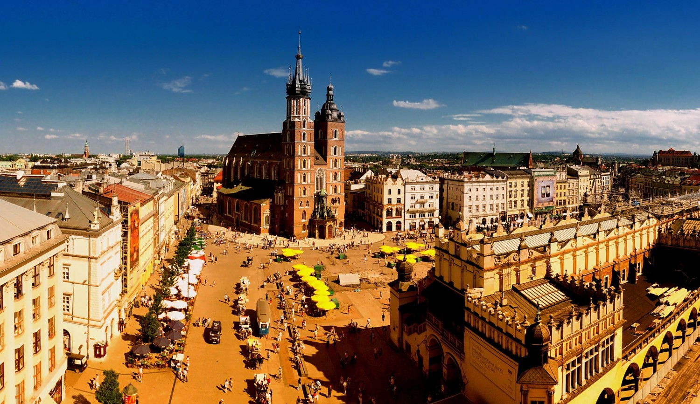

Krakow is the UNESCO City of Literature.
Jonathan Carroll said:
Krakow is one of my favorite places on earth.
It is a medieval city full of young people.
A wonderful, striking combination.
Krakow in the mirrow is "Krakow"
Krakow is Poland’s second largest city and the country’s main tourist destination. The local economy is fueled mostly by expanding service sector although diverse industry and production still provide a fairly significant portion of jobs and wealth. The city remains the culture capital of Poland and its seven universities and nearly twenty other institutions of higher learning make Krakow the country’s principal center of science and education.
Geography of Krakow, Poland.
The city is situated in southern Poland on both banks of Wisla (Vistula) river. Geographic coordinates of central Krakow are 50°04'N 19°56'E. Its average elevation is about 220 meters above sea level. There are several hills within the city limits, highest Sowiniec 384 m above sea level. Krakow has area of 326.8 square kilometers that constitute 0.1 percent of the territory of Poland.
Krakow Museums.
There are 36 museums in Krakow including separate branches of the National Museum in Krakow and the City of Krakow Historical Museum. Krakow National Museum with its ten branches and two libraries is Poland’s biggest. Most interesting museums in Krakow are The Czartoryskis Museum (Muzeum Ksiazat Czartoryskis), Royal Castle (Zamek Krolewski), Schindler's Factory, Bishop Ciolek Palace (Palac Biskupa Ciolka) exhibiting medieval art, Museum of Archeology (Muzeum Archeologiczne), and Aviation Museum (Muzeum Lotnictwa).
Inspiration song from 'Study in Krakow' website
| January | February | March | April | May | June | July | August | September | October | November | December | |
|---|---|---|---|---|---|---|---|---|---|---|---|---|
| Avg. Temperature (°C) | 0 | -0.5 | 2.6 | 6.5 | 11.4 | 15.1 | 17.1 | 16.8 | 13.4 | 9.4 | 4.6 | 1.8 |